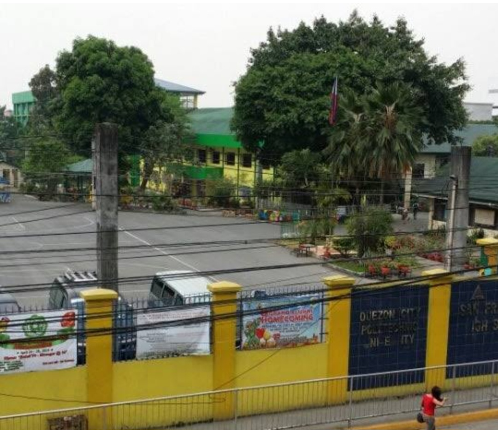
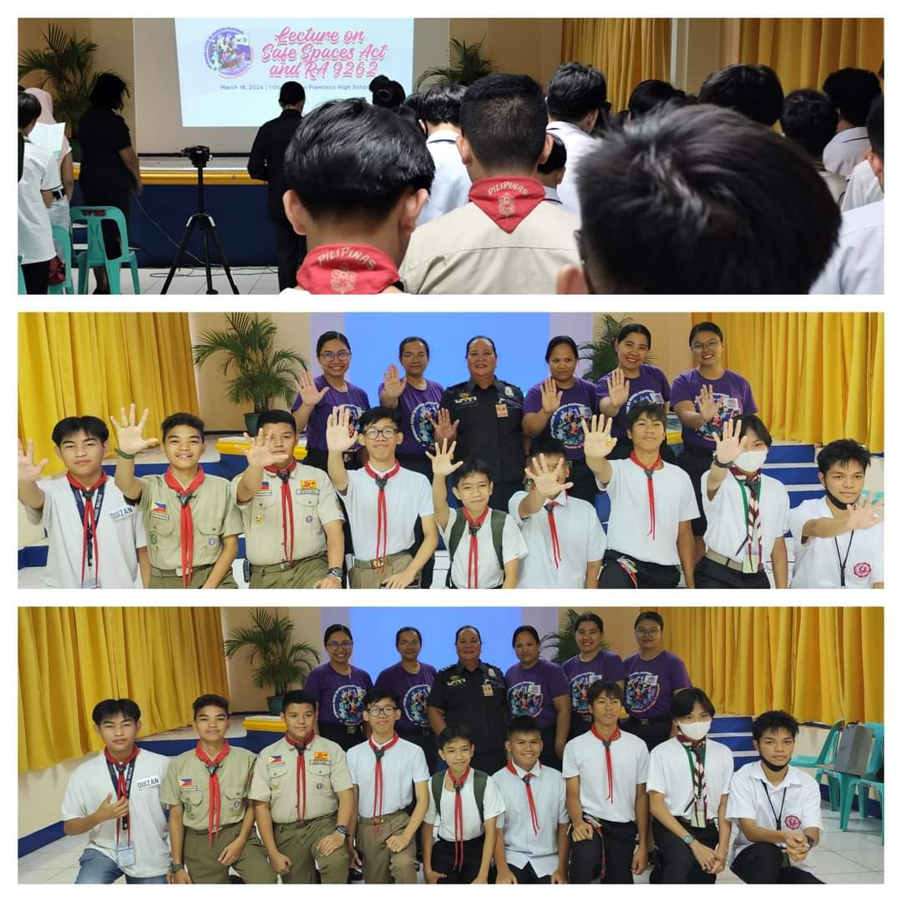
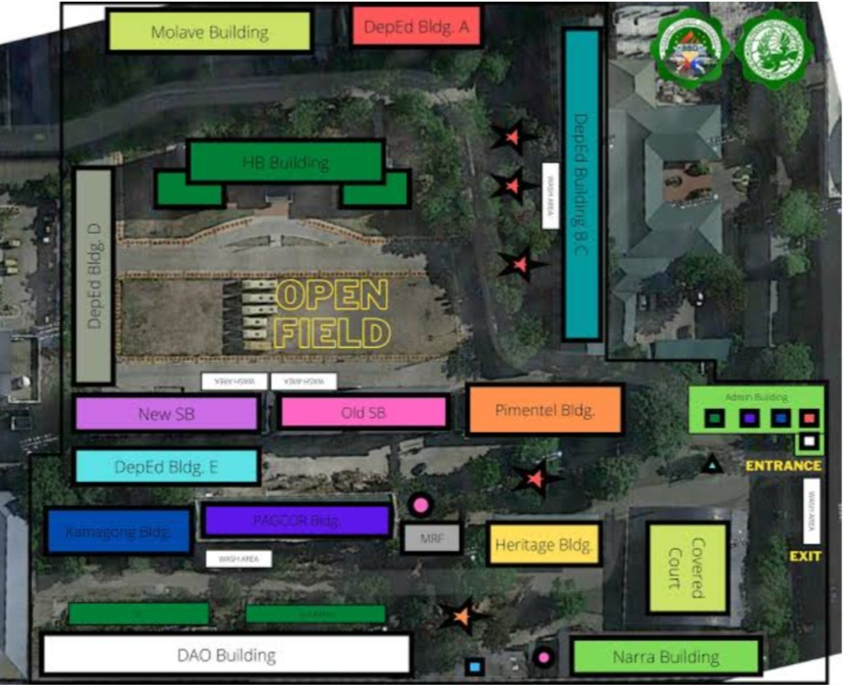

SAN FRANCISCO
ENTRANCE GATE
san francisco entrance gate)
ACTIVITES

Stop the violence 🧐
Salute and gratitude for BJMP National Capital Region for providing time and knowledge for the student and senior scouts of San Francisco High School
Kung kailangan mo ng tengang makikinig, balikat na masasandalan, kamay na mahahawakan, Organisasyong magpaparamdam sainyo na HINDI KA NAG-IISA. Ang SALINDIWA ay nagsasabing....
Kaya mo yan! Huwag mong ikahiya ang paghingi ng tulong. Ang PAG-IBIG sa sarili ay importante dahil ang malusog na ISIP ay malusog na BUHAY. Tara na! At sasamahan ka ng iyong mga KA-SALINDIWA upang mabawasan, maibsan ang mga kalungkutang pinagdaraanan mo. Tandaan mahalaga ang iyong kwento! Gamit ang NGL App, maari mong sabihin ang mga pinagdaraanan mo. Ano pang hinihintay mo, ikaw na lang ang di pa nakagagamit ng App na ito. 🌟
San Francisco High School
#MentalHealthMatters
#Salindiwa_NGL
#Salinkikonian
#Kasalindiwa
NGL LINK.nr>👇🏻
:
https://ngl.link/salindiwa_ngl
PAGE 1
MAPS

help map of school
ABOUT
SAN FRANCISCO HIGH SCHOOL

San Francisco High School (SFHS) is a public educational institution located in Bago Bantay, Quezon City. It was founded as the first annex of Quezon City High School on June 9, 1954, until it became an independent high school on Sept. 30, 1958. The school provides quality, fair, culture-based and complete basic education to produce graduates who are intellectually and technologically competent.
SFHS implements a K to 12 basic education curriculum that offers junior and senior high school. It is under the resolution ordered by the Department of Education (DepEd). It has ABM strand and STEM strand under the Academic track as well as Technical Vocational Livelihood (TVL) track which equips the students with technical skills for its senior high school program.